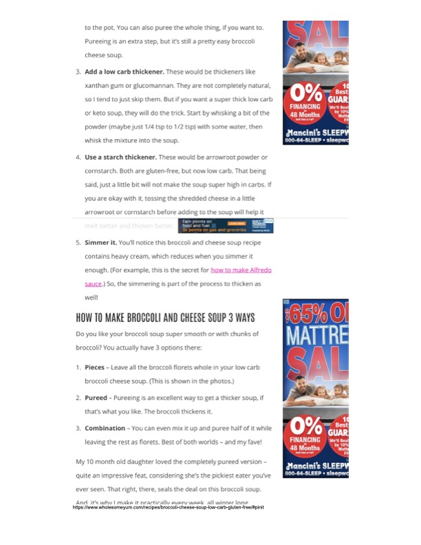

Broccoli Cheese Soup (Low Carb, Gluten-Free) - Preparation Tips

Original cookbook page 20
Additional tips for making broccoli cheese soup with variations for texture and thickening methods. Part of a comprehensive low-carb, gluten-free recipe.
Ingredients
- Broccoli florets
- Heavy cream
- Cheese
- Optional thickeners: xanthan gum, glucomannan, arrowroot powder, or cornstarch
Instructions
- For thickening: Add low carb thickener (1/4 to 1/2 tsp xanthan gum or glucomannan whisked with water).
- Alternative: Use starch thickener (arrowroot or cornstarch) - toss shredded cheese in a little before adding.
- Simmer to reduce heavy cream naturally for thickening.
- Texture options: Leave florets whole (pieces), puree all (smooth), or puree half and leave rest as florets (combination - author's favorite).
Recipe #20 from collection